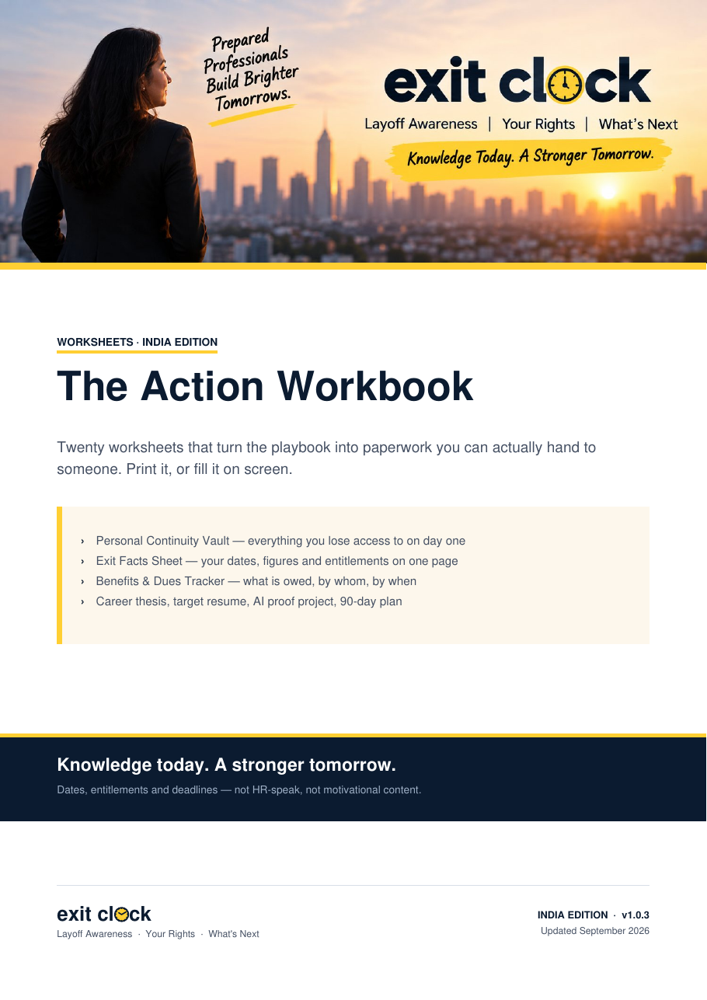
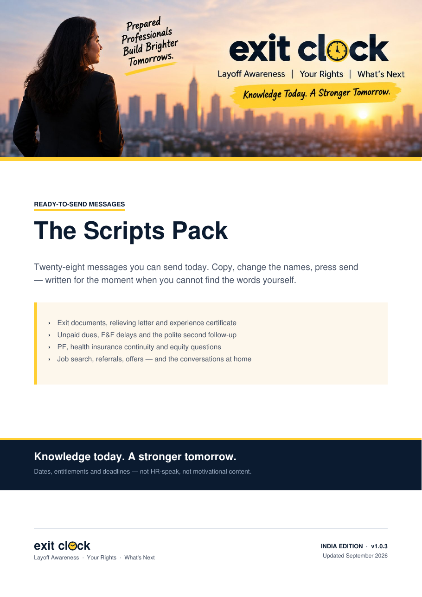

2 working days
Wages due
Wages due after your last working day, under the Code on Wages
The Layoff Kit · India Edition · September 2026
Four clocks start on your last working day. Wages inside two working days. Gratuity inside thirty. A provident-fund withdrawal that can cost you 10% in tax if you get the timing wrong. And a health policy that may already have ended without anyone telling you.
The Layoff Kit is the India-specific system for the weeks either side of an exit — what to ask, what to check, what to sign, and what your runway actually is.
No account. Nothing leaves your browser.
Wages due after your last working day, under the Code on Wages
The window in which gratuity is generally payable once it becomes due
When a PF advance, then final settlement, become available
The date your employer's health cover ends — until you get it in writing
The free tool
The Exit Clock runs entirely in your browser. Enter only what you need. Your dates, salary and runway stay on this device.
Email me your schedule to show the rest inline. A person who refuses the email still keeps the two free deadlines above.
Free, and free forever. This runs in your browser — your dates never reach a server.
The problem
Almost everything written about layoffs in India is either American advice that doesn't apply, or a ₹99 PDF assembled from blog posts.
The four Labour Codes came into force in November 2025 and introduced a common definition of "wages" with a 50% allowance rule that can change the base your gratuity is calculated on. An old salary-structure calculator can now give you the wrong number.
Gratuity is generally 15 days' wages for each completed year, currently capped at ₹20 lakh — and fixed-term employees became eligible at one year, not five, on contract expiry.
A taxable PF withdrawal before five years of continuous service can attract 10% TDS under section 192A above ₹50,000. Service with a previous employer can count, if the PF was transferred.
Leave encashment for non-government employees is exempt only up to a statutory ceiling currently at ₹25 lakh, on a lower-of calculation — and whether you can encash at all is set by your employer's policy, which is a separate question.
Group medical cover can end on your last working day, at month end, or on some other policy-defined date. Not, as most people assume, at the end of a severance period.
Who it's for
Start with the 72-hour sequence: what to get in writing before access ends, what to ask HR, what not to sign, and how to work out your runway before you make a decision you cannot reverse.
Reorgs, a hiring freeze, your project cancelled. Everything is easier to arrange while you still have a laptop, a payslip and an active health policy.
Reset the runway, pick one target instead of five, and build one piece of proof that you are current — instead of collecting courses.
What you get
Every module ends in something you have made rather than something you have read.


Enter your last working day and it lays out every deadline with the rule behind it and the wording to send. It runs entirely in your browser — no account, no server, nothing stored anywhere you can't see.
Twelve modules, each ending in something you have made rather than something you have read: a continuity vault, an exit facts sheet, a runway number, a career thesis, a job-search pipeline, a 90-day plan.
Readiness scorecard, dues tracker, insurance continuity sheet, expense cut ladder, skill-gap map, story bank, offer scorecard.
Your survival burn, your runway in months, your stress date, your exit dues tracked component by component, and an offer comparison that weighs more than salary.
Backend, frontend, QA, DevOps, data, embedded, security, product, sales, marketing. Each is a standalone guide with a 30-day proof project broken into four weeks, the vocabulary that gets you found, and three interview questions. The one for your role is free.
The exact wording for HR, F&F follow-ups and insurance queries.
Afterwards
Ask for a component-wise settlement calculation, and know whether the one you get is right.
Say your runway in months, and know the date by which you need a different plan.
Know the exact date your health cover ends, and what replaces it.
Decide about your PF instead of defaulting into a withdrawal.
Explain what you are good at in outcome language, to a specific target role.
Show one piece of evidence that you are current with AI in your own field.
Run a job search with a weekly number attached, rather than by refreshing job boards.
One bundle. No tiers.
Founding price for the first 50 buyers.
About a day of a mid-level salary, against a settlement usually worth lakhs.
Honest answers
You can control whether you find out about a deadline before it passes, or three weeks after.